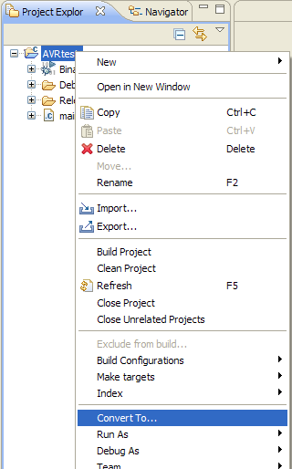

Sometimes it is necessary to break compatibility with projects created with previous versions of the plugin. This is done to include / upgrade features or to fix bugs.
The plugin has a project update converter to update projects created with previous versions of the plugin. Projects not converted usually do not build anymore.
Note: Before updating a project, especially with a beta version of this Plugin, you might want to make a backup of your project.
While none of your source files are touched by the upgrade, your carefully selected toolchain options could be affected.
| To upgrade old projects right click on the project and select Convert To... from the context menu. |
 |
If the project has been created with a previous version and is updateable to the current version, the following dialog is shown:
Select Update to AVR Eclipse x.x and click
The Eclipse internal informations about the project are then updated. Note that there is no visible changes other that the project builds again.
Calling the converter multiple times for a project is possible and does not cause any harm.